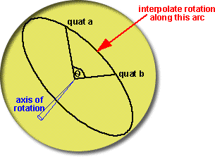
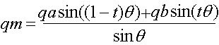
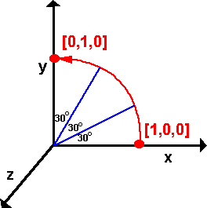

How do we interpolate between two quaternions representing rotations? For instance
we may want to fill in some gaps between calculated rotations to make an animation
less jerky.

if q is the quaternion which
rotates from qa to qb then:
qb = qa * q
multiplying both sides by conj(qa) gives:
q = conj(qa) * qb
The real part of a multiplication is:
real((qa.w + i qa.x + j qa.y + k qa.z)*(qb.w + i qb.x + j qb.y + k qb.z)) =
qa.w * qb.w - qa.x*qb.x - qa.y*qb.y- qa.z*qb.z
So using the conjugate of qa gives:
real((qa.w - i qa.x - j qa.y - k qa.z)*(qb.w + i qb.x + j qb.y + k qb.z)) =
qa.w*qb.w + qa.x*qb.x + qa.y*qb.y+ qa.z*qb.z
real(q) = cos(t/2)
Therefore
cos(theta/2) = qa.w*qb.w + qa.x*qb.x + qa.y*qb.y+ qa.z*qb.z
(It is interesting that this looks like a vector dot product).
So what is the equation that allows us to calculate the interpolated quaternion?
There seems to be a paper about this which everyone quotes: [Ken Shoemake,
Animating rotation with quaternion curves in SIGGraph '85 proceedings]. However
this seems to require membership so I have not read this.

where:
- qm = interpolated quaternion
- qa = quaternion a (first quaternion to be interpolated between)
- qb = quaternion b (second quaternion to be interpolated between)
- t = a scalar between 0.0 (at qa) and 1.0 (at qb)
- θ is half the angle between qa
and qb
How do we convert from cos(theta) to sin(theta)
is it best to use:
sin(theta) = sin(acos(cos(theta)))
or
sin(theta) = sqrt(1-cos(theta)2)
Example 2
Let us take the 90 degree rotation in example
1 on transforms page and calculate two interpolated points.

First method: axis-angle
Since the angles are simple we can calculate the result from q = cos(t/2)
+ i ( x1 * sin(t/2)) + j (y1 * sin(t/2)) + k ( z1 * sin(t/2))
So the quaternions represented the two interpolated points are:
q1 = 0.966 + i 0 + j 0 + k 0.259
q2 = 0.866 + i 0 + j 0 + k 0.5
Second method: using SLERP
Try spherical interpolating between the rotated value (0.7071 + k 0.7071)
and the non-rotated, identity, value (1).
theta = 90 degrees
using the above method cos(theta) = 0.7071 therefore theta = 45 degrees
sin(theta) = 1
for q1 t = 0.33, for q2 t = 0.66
q1 = ((1) sin ((1-t) theta) + (0.7071 + k 0.7071) sin (t theta)) / sin(theta
)
= (sin(30 degrees) + (0.7071 + k 0.7071) sin (15 degrees)) / sin( 45
degrees)
q1 =( 0.5 + 0.7071 * 0.2588 + k (0.7071 * 0.2588))/0.7071
q1 = (0.68299748 + k 0.18299748 )/0.7071
q1 = 0.9659 + k 0.2588
This is theresult for q1, now calculate the result for q2,
q2 = ((1) sin ((1-t) theta) + (0.7071 + k 0.7071) sin (t theta)) / sin(theta
)
= ((1) sin(15 degrees) + (0.7071 + k 0.7071) sin (30 degrees)) / sin(
45 degrees)
q2 = (0.2588 + 0.7071* 0.5 + k (0.7071* 0.5))/0.7071
q2 = (0.61235 + k 0.35355) /0.7071
q2 = 0.866 + k 0.5
this gives gives the same answer, but only if theta = angle between quaternions
/2 |
code
The following code generates a quaternion between two given
quaternions in proportion to the variable t, if t=0 then qm=qa, if t=1
then qm=qb, if t is between them then qm will interpolate between them.
This is based on code sent to me by Anthony(Prospero). Also thanks to Josh for sending a number of improvements.
quat slerp(quat qa, quat qb, double t) {
// quaternion to return
quat qm = new quat();
// Calculate angle between them.
double cosHalfTheta = qa.w * qb.w + qa.x * qb.x + qa.y * qb.y + qa.z * qb.z;
// if qa=qb or qa=-qb then theta = 0 and we can return qa
if (abs(cosHalfTheta) >= 1.0){
qm.w = qa.w;qm.x = qa.x;qm.y = qa.y;qm.z = qa.z;
return qm;
}
// Calculate temporary values.
double halfTheta = acos(cosHalfTheta);
double sinHalfTheta = sqrt(1.0 - cosHalfTheta*cosHalfTheta);
// if theta = 180 degrees then result is not fully defined
// we could rotate around any axis normal to qa or qb
if (fabs(sinHalfTheta) < 0.001){ // fabs is floating point absolute
qm.w = (qa.w * 0.5 + qb.w * 0.5);
qm.x = (qa.x * 0.5 + qb.x * 0.5);
qm.y = (qa.y * 0.5 + qb.y * 0.5);
qm.z = (qa.z * 0.5 + qb.z * 0.5);
return qm;
}
double ratioA = sin((1 - t) * halfTheta) / sinHalfTheta;
double ratioB = sin(t * halfTheta) / sinHalfTheta;
//calculate Quaternion.
qm.w = (qa.w * ratioA + qb.w * ratioB);
qm.x = (qa.x * ratioA + qb.x * ratioB);
qm.y = (qa.y * ratioA + qb.y * ratioB);
qm.z = (qa.z * ratioA + qb.z * ratioB);
return qm;
}
When theta is 180 degrees the result is undefined because there is no
shortest direction to rotate, I don't think this situation is handled
correctly yet, it would be better if we choose some arbitrary axis that
is normal to qa or qb, I would appreciate any ideas for the best way to
do this.
Other Issues
There is an easy way to interpolate a rotation into 2 equal halves, as
explained here.
Inverting Quaternions
Thank you to Martin aus Chemnitz for letting me know about this.
You may need to add the following code after cosHalfTheta is calculated.
if (cosHalfTheta < 0) {
qb.w = -qb.w; qb.x = -qb.x; qb.y = -qb.y; qb.z = qb.z;
cosHalfTheta = -cosHalfTheta;
}
Since (w,x,y,z) and (-w,-x,-y,-z) represent the same rotation we
should make sure that are not sensitive to whether the positive of
inverted form of the quaternion are used. Since:
cosHalfTheta = qa.w * qb.w + qa.x * qb.x + qa.y * qb.y + qa.z * qb.z
inverting either of the quaternions (qa or qb) will invert cosHalfTheta, but then we call acos, according to this page.
acos always returns a value between 0 and 90 degrees (0 and Pi/2) for
positive inputs and 90 to 180 degrees (Pi/2 to Pi) for negative
inputs.
But sinHalfTheta will be the same if it is inverted or not.
We want to return the shortest angle, i.e.
0 > halfTheta < 90deg
0 > theta < 180deg
therefore we need cosHalfTheta to be positive.
but should we invert qa or qb? Since they represent the same rotation, I guess it doesn't matter which we invert.
I think there is another way of looking at this. If qa is our starting
orientation (say along the x axis) and we start to rotate qb away from
it, cosHalfTheta will start at 1.0 and when we get to 180 degrees then
cosHalfTheta will be zero, if we rotate beyond 180 degrees then
cosHalfTheta will become negative and when we have rotated by 360
degrees then cosHalfTheta will be -1.0. cosHalfTheta wont be back to
its original value until qb has rotated through 720 degrees.
So we may want this to operate either way, if qb has rotated 360
degrees we may want to interpolate through a complete rotation or we
may want to treat it as 0 degrees and so all the interpolated rotations
will be zero.
It might be best if this modification is optional?
Alternative Methods - such as nlerp
There is a very good article on this web site. (thanks very much to ovillellas for letting me know about this).
SLERP Calculator
The following calculator allows you to interpolate between two
quaternions using the SLERP algorithm. Enter the values into the top two
quaternion and t then press SLERP to display the result in the bottom
quaternion:
This site may have errors. Don't use for critical systems.